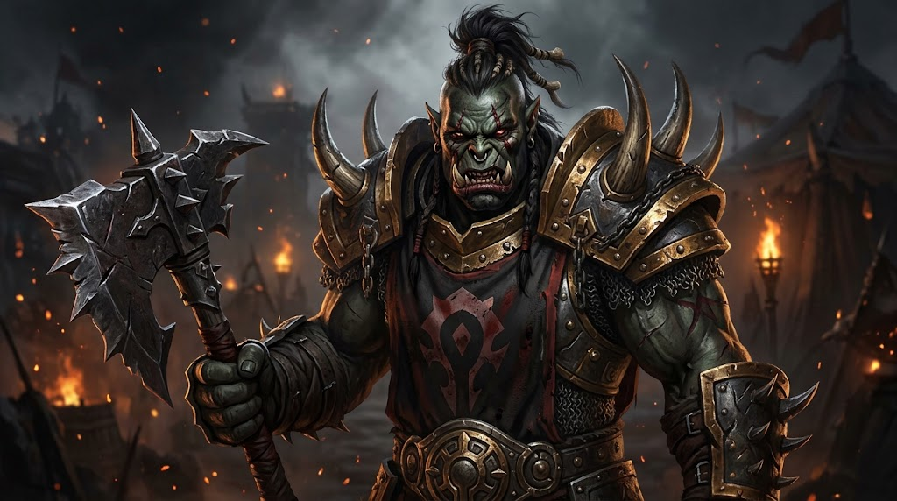

Kor'kron Guard · Record of Service
Grimscar Greystone
Orc Warrior · High Overlord of the Kor'kron Guard

“I have broken stone for human masters and broken human shields for my Warchief. Of the two, the stone was more honest.”
At a Glance
- Name
- Grimscar Greystone
- Race & Class
- Orc Warrior
- Born
- Blackrock clan, on Draenor, beneath the shadow of the clan's mountain forges
- Age
- Some forty-five winters. Old for a soldier who has fought every war.
- Allegiance
- Warchief Thrall, through High Overlord Varok Saurfang
- Station
- High Overlord of the Kor'kron Guard: the commander who carries this banner of the Kor'kron in Saurfang's name
- Known as
- “Greystone” to the veterans, “the Overlord” to the Guard, “the old stone” to grunts who think he can't hear them
- Build
- Tall even for an orc, broad through the shoulders, a little stooped now from years of carrying shield and axe
- Battle Cry
- He doesn't have one. He says “Lock shields,” and the line does.
Appearance
Grimscar's skin is the deep moss-green of the orcs who lived through the blood-curse, weathered to leather by Durotar's sun. What hair he has left is iron-grey, pulled back into a single warrior's braid bound with three rings of black iron: one for each war he has survived.
The scar that gave him his name runs from his left brow, across the bridge of his nose, down to the corner of his jaw, where a lower tusk was snapped short and never grew back. It is the mark of a paladin's hammer at Blackrock Spire, the day the Horde broke. The eye beneath it still sees, but it waters in the cold.
His wrists bear old shackle scars, ringed and pale. He does not hide them.
In the field he wears dark plate with the blood-red tabard of the Kor'kron Guard, and carries a heavy shield on his left arm and an axe on his back. Out of the field he wears a plain leather jerkin, sits close to the fire, and could be mistaken for any old grunt, until somebody makes a mistake and he stands up.
His axe is called the Shackle. When Thrall broke open his camp, Grimscar took the iron of his own chains to a Frostwolf smith and had it beaten into the bands that bind the haft. He has never let another orc carry it.
Voice & Manner
- Speaks little. Short sentences, low voice, long pauses. When he speaks, the fire gets quiet.
- Dry as Durotar. His humor is so flat that new Scouts don't realize he's joking for weeks.
- Never shouts in battle. He grew up among warriors who howled themselves into the blood-fury, and he watched where that howling led. Now he calls orders the way a smith calls the strike: calm, clear, on the beat.
- Patient with the young. He doesn't mock a grunt for screaming at the Alliance. He was that grunt once. He just takes them aside after.
- Has no patience for ego. Chieftains who brag, warlords who preen, soldiers who break the line to chase glory: he despises them with an old, quiet anger.
The Tale of Grimscar Greystone
Chapter IA Son of Blackrock
He was born on Draenor to a Blackrock smith, in the years when the sky over the clan's forges was still the color of a sky and not a wound. His first memories are of the hammer's ring, the smell of quenched iron, and his father's hands, black with soot, holding a blade up to the light to look for flaws.
“A blade that bends is a blade that lies,” his father told him. “Never trust one.”
He was barely more than a youngling when the warlocks came to the clans with their fel fire and their promises. He remembers the day the Blackrock warriors came back from the Hold of the chieftains with something new in their eyes. He remembers the fever spreading through the camp like a sickness, his own blood turning hot, the rage that came for no reason and would not leave. He remembers his skin turning green.
He remembers the draenei. He does not speak of the draenei.
Chapter IIThrough the Dark Portal
He crossed into Azeroth with the first great wave of the Horde, a young grunt with a borrowed axe, out of the stinking swamps of the Black Morass and into a land so green it hurt to look at. He fought in the long campaign of the First War, and he was there, in the smoke and the screaming, when the walls of Stormwind fell.
It should have been the proudest day of his life. Instead he remembers the Horde turning on itself before the city had stopped burning: Blackhand dead at Doomhammer's hand, the Blackrock clan torn between loyalty to its chieftain's sons and loyalty to the new Warchief. Grimscar's father chose Doomhammer. So did Grimscar. His elder brother, Gorvash, did not.
Chapter IIIThe Day the Horde Broke
Under Orgrim Doomhammer, Grimscar marched north in the Second War. He held the line at Hillsbrad, he watched the red dragons of the Dragonmaw set Quel'Thalas aflame, and he stood in the siege lines before the walls of Lordaeron's capital, close enough to smell the bread baking inside, when Gul'dan's betrayal pulled the Horde away from victory.
The Horde fell back to Blackrock Spire. There, in the Burning Steppes, the Alliance came for them: knights of Lordaeron, Stromgarde's soldiers, the dwarves of Ironforge, and the first paladins of the Silver Hand, glowing with a light that burned to look at.
One of those paladins broke Grimscar's shield, and then his face. He went down in the ash with his tusk in pieces and his eye full of blood, and when he woke he was in chains.
The last thing he saw on that field was Doomhammer being led away as a prisoner. And through the smoke, on the slopes of the mountain, a band of Blackrock warriors who would not surrender fleeing up into the Spire with Blackhand's sons. His brother Gorvash was among them.
Chapter IVThe Grey Years
The internment camps of Lordaeron were built of grey stone, and the orcs were made to break more of it. For years Grimscar swung a hammer in a camp quarry in the hills, while the demon's blood burned out of him and left behind a sickness worse than the fury: the lethargy. Warriors who had sacked Stormwind sat down in the mud and did not get up. Some never did.
Grimscar did not let himself sit. Every day he broke his quota of stone and then broke more, because his father's words had never left him: a blade that bends is a blade that lies. He would not bend. The other prisoners began calling him Grimscar for his ruined face and his silence, and it stuck; his birth name he gave up to the camp, and has never spoken since.
At night he told the younger orcs, born behind those walls and knowing no other home, about Draenor. About the sky before the warlocks, the forges, the hunt. Some of them are in the Horde's armies now. A few of them are in the Kor'kron.
Chapter VThe Breaking of the Camps
Then came the rumors: a young orc named Thrall, raised in Durnholde, with the Frostwolves and Grom Hellscream at his back, was breaking open the camps one by one.
When the Frostwolf warriors came over his camp's walls, Grimscar was the first prisoner through the gate, a quarry hammer in his hands and no armor on his back. He fought in Thrall's liberation campaign from that night on. He was there when Orgrim Doomhammer fell beneath a knight's lance, and he saw the dying Warchief give his black plate and his hammer to the son of Durotan.
He took his own name that night. Greystone, for the stone he broke in the camps, so that he would never forget what it cost to be free.
Chapter VIAcross the Great Sea
When Thrall took the Horde west at a prophet's word, Grimscar went with him. He rode out the storm that broke the fleet against Kalimdor's shore, and marched through the Barrens beside the Warchief as the Horde fought off the centaur and escorted Cairne Bloodhoof's tauren to safety in Mulgore.
He was in Ashenvale when Grom and the Warsong fell to the blood again, and he felt the old fury stir in him at the mere smell of it. He was there when Thrall and Grom went into the canyon to face Mannoroth, and he was there when only Thrall came out. Grimscar knelt that day, for the first time since Blackrock Spire, and wept for the orc who had freed them all from the curse.
At Mount Hyjal he stood in the Horde's lines on the slopes of the mountain while the Burning Legion came up the hill in endless waves. Humans stood to one side of him, night elves to the other. He held. When the dawn came and Archimonde was dead, a human soldier of Jaina Proudmoore's army, as battered as he was, passed him a waterskin without a word. Grimscar drank and gave it back. It is the only kindness he has ever accepted from a human, and he has never forgotten it.
Chapter VIIThe Red Land
In Durotar, the Horde built a home out of nothing, and Grimscar helped raise the walls of Orgrimmar with his own hands. When Admiral Proudmoore's fleet came out of the west, he fought on the beaches against the Kul Tirans, and he marched on Theramore with the Warchief.
When Thrall named his elite and set High Overlord Varok Saurfang over them, Saurfang sent for the old Blackrock who had never once broken a line. They had served in the same clan, in the same wars, under the same banners; neither ever needed to explain to the other what the blood had done to them.
“Raise me a company of the Kor'kron. Veterans who will not break, and young ones you will teach not to.”
Grimscar raised the Kor'kron Guard.
Chapter VIIINow
Grimscar commands the Guard from Orgrimmar, and answers to Saurfang alone, through him to the Warchief. He leads the Vanguard into the dark places of the world himself, and he sits at the Hearth fire with the Scouts on the nights between.
But there is a war he has not finished. In Upper Blackrock Spire, Warchief Rend Blackhand sits on a throne of stolen glory with the Dark Horde at his feet: the Blackrock orcs who fled up the mountain the day the Horde broke. Grimscar does not know if Gorvash still lives among them. He does not know what he will do if he finds out.
He knows only this: the head of Rend Blackhand will be laid at Thrall's feet, and it will be the Kor'kron Guard that lays it there.
His Nature
Virtues
Iron discipline. Unbreakable loyalty to Thrall and Saurfang. Patience with the young. A deep, quiet sense of honor that holds even toward enemies who earn it.
Flaws
Slow to trust anyone outside the Horde, and slower still with the Forsaken. Carries old guilt like plate armor and won't take it off. Can be cold, stubborn, and blind to the fact that the young soldiers he protects are sometimes ready before he thinks they are.
Fears
That the blood-fury is not gone, only sleeping, in him and in the orcs. That the Horde will forget what it cost. That he'll find Gorvash in Blackrock Spire, and have to raise the Shackle against his own brother.
Loves
The ring of a well-struck forge. The fire in the Valley of Strength on a cold night. A raid that runs clean. The look on a Scout's face when they're forged into a Legionnaire.
Hates
Warlocks who smile too much. Grunts who break the line for glory. The smell of fel. Rend Blackhand.
Bonds of Blood & Iron
Words He Is Known By
Threads Left Unwoven
- The brother in the Spire. Every Upper Blackrock Spire run is personal. Somewhere among the Dark Horde there may be an old orc with Grimscar's jaw. Finding Gorvash (alive, dead, or turned) is a long-form story for the Guard to play out together.
- The fury beneath. On the worst nights, deep in the fight against something that reeks of the Legion, the old blood-rage stirs in him. Who in the Guard notices? Who talks him down?
- The waterskin at Hyjal. Somewhere out there is the human soldier who handed it to him. If the Outriders ever capture a grey-haired veteran of Theramore's guard, Grimscar might ask them a strange question before letting them go.
- Teaching the camp-born. Young orcs born in the internment camps sometimes seek him out, because he told stories of Draenor to their parents behind those walls.
- The Shackle. Anyone who asks why the axe is banded in old iron gets the story. Anyone who touches it without asking gets a very short answer.
What Is Whispered of Him
Common knowledgeThe Overlord is an old Blackrock veteran of every war, freed from the camps by Thrall, trusted by Saurfang.
Fire-talkHe was at Hyjal. He was at Stormwind's fall. He doesn't sleep much.
RumorHe has kin among the Dark Horde in Blackrock Spire.
Known only to the oldestNo one living has heard his birth name.